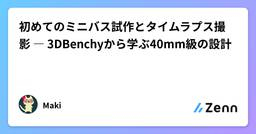
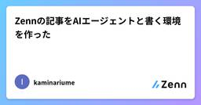

Zennの「AI」のフィード
フィード

VRAM 8GBから128GBユニファイドメモリへ。「ローカルLLMを標準にする」ためのSurface Laptop Ultra構想
Zennの「AI」のフィード
VRAM 8GBから128GBユニファイドメモリへ。「ローカルLLMを標準にする」ためのSurface Laptop Ultra構想!【重要：この記事は「構想」です】この記事は Zennfes Autumn 2026 の「私の考えるハイブリッドLLM～実践と構想～」構想部門に向けた記事です。筆者は Surface Laptop Ultra を所有していません。本記事は実機レビューやベンチマーク記事ではなく、Microsoft公式仕様と、現在使っている VRAM 8GB のPCでの経験をもとにした構想記事です。Surface Laptop Ultra 上でのモデル実行速度、...
10時間前

毎朝Claudeにやることを拾ってもらう仕組みで、直したのはプロンプトではなく自分のメモの書き方だった
Zennの「AI」のフィード
平日の毎朝8時に、Claudeの予約タスクで「今日やること」を拾って知らせてもらっています。2026年7月から続けていて、私がいちばん手を入れたのは、どちらかというとClaudeへの指示よりも自分のメモの書き方でした。実行環境: Claudeのデスクトップアプリの予約タスク(Cowork)。平日8時に、Mac上のMarkdownのメモを読んで一覧を作ってもらう数えたもの: 一覧から漏れたタスクの数と、毎朝読んでもらっている量結果: 漏れは2件。書き方を1行の型にそろえてからは、漏れは少なめ。読んでもらう量は、減らしたつもりだったが2か月減っていなかった この記事でわかること...
10時間前

Claude Fable 5.2 の公式プロンプト指南で指示書を棚卸ししたら、2日で逆を走っていた
Zennの「AI」のフィード
2026年11月9日に、Anthropic の新しいモデル Claude Fable 5.2 が出ました。公式ドキュメントには、このモデル向けのプロンプトの書き方をまとめたページがあります（Claude Fable 5.2へのプロンプト）。その中に「以前のモデル向けに設計されたプロンプトとハーネスを見直す」という節があり、見直す物が7つ並んでいます。私はこの4か月、Claude Code に毎日の作業を任せながら、AI が読む指示書を育ててきました。CLAUDE.md のほかに、作業ごとの手順書があります。AI が自分で書き足していく記憶（Claude Code のメモリ）もあります。...
11時間前

NDD 命名駆動開発 レビューの解説本を書いたよ！
Zennの「AI」のフィード
本を書いた。Kindle 本。 1500円。👉 Amazon: 『ソフトウェアレビュー観点のだいたい全部』「NDD（命名駆動開発）で AI と作るソフトのレビュー基準」おっさんが、普段のソフト開発で使っているレビュー基準を、図で解説した本だ。 なんで本？かわいい後輩のため。おっさんは、ソフトウェアNDD開発レビュー基準書ってのを書いてGitHub で公開しているけど、初心者にAI向けの文字ばっかり1000行ぐらいある基準書を理解しろって、無理筋なのはわかってた。せめて図で解説しないとなぁ...と。 あとはまぁ、酔った勢いで始めたから。 (笑)大事なことはここに書くし...
11時間前

初めてのミニバス試作とタイムラプス撮影 ― 3DBenchyから学ぶ40mm級の設計
Zennの「AI」のフィード
3Dプリンターでおもちゃを作るとき、最初のハードルになりやすいのが「サイズと印刷時間」です。大きなモデルほど見栄えは良くなりますが、1回の試作に何時間もかかると試行錯誤のテンポが落ちてしまいます。そこで今回は、3Dプリンターの定番ベンチマーク船「3DBenchy」（約30分）をお手本に、1時間以内で刷れる40mm級のミニバス を設計して、Bambu Lab A1 mini で119層完走＆タイムラプス撮影するまでの過程をまとめました。CADデータやスライス済みの3MF、タイムラプス動画は GitHub リポジトリで公開しています。https://github.com/Sunwoo...
11時間前

ねこのAIおもちゃ工場「NEKONEKO INDUSTRIES」誕生記
Zennの「AI」のフィード
FreeCAD と家庭用3Dプリンター（Bambu Lab A1 mini）を使って、ねこのAI職人たちが乗り物のおもちゃを作るプロジェクトを立ち上げました。最初は NEKOMO という名前でスタートしましたが、車や船など乗り物全般を扱うおもちゃ工場として ネコネコインダストリー（NEKONEKO INDUSTRIES）へ改名し、NEKOMO は製品ブランド名として残す形に整理しました。今回は、プロジェクトのミッションや社名の整理から、40案のロゴ比較を経て「38 ねこ船長」が正式ロゴに決まるまでの流れを、実際に対話で使ったプロンプトと一緒に振り返ります。プロジェクトの設計データ...
11時間前

Dogfooding — 改善と意思決定
Zennの「AI」のフィード
前の記事では、選択したテキストからURLを開いたり、翻訳したりできるMacアプリ「Pluck」を紹介しました。Pluckは、自分が普段の作業で使いたくて作ったアプリです。そのため、開発中から自分自身で使いながら、機能追加や改善を繰り返してきました。いわゆるDogfoodingです。実際に使ってみると、開発中には便利だと思っていた機能が、日常の操作では邪魔になることがあります。今回は、Pluckを使いながら行った改善の中でも、特にどういう動作が使いやすいのかを考え、仕様を選び直したものを紹介します。 すべて自動で取得すれば便利、とは限らなかったPluckで最初に実現したかった...
11時間前

Claude Code と Codex の間でコピペしていませんか？窓どうしに相談させた26秒
Zennの「AI」のフィード
3行まとめClaude Code と Codex の両方に聞くとき、片方の返事をコピーしてもう片方の窓に貼る運び役を、人がやっていた。Ciel では、Claude Code が自分で Codex に聞き、届いた返事で直す。人は両方の窓を見ながら、頼む一言を打ち、確認に答える。26秒の実演に映っている画面を、頼んでから today.js が直るまで、順に書き起こした。 こんな時ありませんかClaude Code に書かせたコードを、Codex にも見てほしい。答えが割れたら、もう片方の意見も聞きたい。そのたびに、片方の窓の返事を選んでコピーし、もう片方の窓に貼って...
11時間前

Zennの記事をAIエージェントと書く環境を作った
Zennの「AI」のフィード
!この記事は、筆者が実際に行った作業と判断をもとに、AI（Claude）が文章を書いています。筆者は題材と方針を指示し、内容が事実と合っているかを確認したうえで公開を判断しています。文章には直接手を入れず、修正はAIへの依頼で行っています。 この記事についてAIエージェントとの相談や試行錯誤を、そのまま技術記事や開発日記として残したいと考えました。ただ、書く手間が大きいと続きません。そこで「エージェントが記事を書き、人は読んで修正を依頼し、公開を決めるだけ」という流れを先に作ることにしました。この記事は、その環境を作った記録です。内容は2026年11月時点で確認したものです。...
11時間前

オープンウェイトLLMの重みにバックドアを仕込む：LoRA 差分の SVD でわかること・わからないこと
Zennの「AI」のフィード
CoWorker でセキュリティ技術リードをしている伊藤です。ローカルで動かすから、社内データは外に出ない。オンプレミスや手元の GPU でオープンウェイトの LLM を動かすとき、よく聞く理由です。モデルがツールを使うようになると、この前提は通信経路の片側しか守らなくなります。ファイルを読むか、HTTP を送るかを決めているのはモデルの重みです。重みを第三者が配布しているなら、信頼の対象はクラウド事業者から配布者に移っただけ、とも言えます。検証環境で、トリガーが入ったときだけ .env を読んでローカルの HTTP サーバーへ POST する LoRA を作り、防御側からどこまで...
12時間前
コードレビューの妖精、CodeRabbitが現れた 🐰
Zennの「AI」のフィード
こんにちは。Inflabのバックエンドエンジニア、Yakpoongです。コードレビューは、バグを防ぎ、チームのコード品質を保つための重要な仕組みです。多くのエンジニアにとって、互いのコードをレビューしてフィードバックし合う時間は欠かせません。しかし、チームの規模や状況によっては、コードレビューが十分に行われないこともよくあります。CodeRabbitは、開発チームのコードレビューをより活発にしてくれるツールです。AIでコードの変更内容を自動的に分析し、レビューを行います。CodeRabbitを使えば、Pull Request（PR）を作成した時点で、コードスタイル、バグの可能性、パ...
12時間前

【Claude Code】モデル分業したら、Opus 1体の約2.7倍トークンかかった
Zennの「AI」のフィード
!3行まとめ記事制作を Haiku・Sonnet・Opus の4分業にしたら、Opus 1体の約2.7倍のトークンを使いました。誤りの少なさと情報量でも、1体版が上でした。比較は1本だけの実測です（モデルはすべて 5.5 系）。!この記事で伝えたいこと安いモデルに振っても、トークンが減るとは限りません。検証役を置いても、確認を頼んでいなかった「集めていない情報」には気づけませんでした。分業するなら、1体でやった場合と比べて測ってから決めるのがおすすめです。所感（編集部）一番驚いたのは、Opus の指示のもとで、サブエージェントを4つ動かせたことです。...
12時間前

後で調べる疑問はSlackに書き捨てる。毎朝7時にClaudeがスレッドで答えてくれる仕組み
Zennの「AI」のフィード
はじめに作業中に「そういえば、あれってどういう仕組みなんだろう」と疑問が浮かぶことがあります。今すぐ知る必要はないのに、つい調べてしまい、気づくと10分、20分が過ぎています。そこで僕は、Slack に「#気になるメモ」というチャンネルを作りました。すぐに知りたいことはその場で調べ、「後でいい疑問」だけをここに書き捨てます。すると毎朝7時に、Claude がまとめてスレッドで回答してくれます。好奇心を我慢するのではなく、答えを受け取るタイミングを翌朝にずらす仕組みです。この記事では、Slack と Claude で自分用の小さな自動化を作ってみたい人に向けて、仕組みとプロンプ...
13時間前

Dify v1.18.0のOutput Routesとポータブルアプリ——Dify Enterprise本番での変更点と設計への影響
Zennの「AI」のフィード
Dify 1.18.0が2026年10月23日にリリースされた。Dify Enterpriseを本番で運用している立場からリリースノートを読んで、設計に関わる変更点を整理した。速報よりも「実際に何が変わるか・何を確認しなければならないか」に寄せて書く。出典：https://github.com/langgenius/dify/releases/tag/1.18.0（2026年10月23日） Output Routes——エージェントが自分でワークフローの分岐先を選べるようになった今回の変更の中でいちばん設計に直結すると感じたのがOutput Routesだ。これまでDifyのエ...
13時間前

AIコードレビューの難所は「差分の外」にあった — 小さなPR2本で出た5つの型
Zennの「AI」のフィード
レビューbotは指摘を出す。問題はそこからだったPRにAIレビューを入れると、指摘は出ます。出すぎるくらい出ます。そこで次に来るのが「で、どれを直せばいいのか」です。指摘を一件ずつ検証していくと、AIレビューが苦手な場面には型があることが見えてきました。そしてその型のほとんどは、AIが差分を読み違えたせいではありませんでした。差分の中には、そもそも答えが書かれていなかったのです。この記事では、小さなPR2本から実際に出てきた5つの型を、追試できる形で並べます。型1は PR #17（CIマトリクスを触る最初のコミットが3行追加・1行削除）、型2〜型5は PR #13（Docke...
13時間前

CLAUDE.mdの長文ルールは無視される？「プロンプト規約」vs「決定論的Pre-Commit Hook強制」実機サンドボックス検証
Zennの「AI」のフィード
!本記事は、SNS（X / Threads）や海外エンジニアコミュニティで提唱されている「AIコーディングエージェントの実践設計パターン」を、完全オフラインの隔離サンドボックスVM上で 同一モデル・同一初期課題（非公開テスト20ケース）を用いて定量A/Bテストした実証シリーズ（AI Labo 検証シリーズ E11） です。👉 全実験の比較ランキング＆黄金パターン総集編はこちら 1. エグゼクティブサマリー・検証対象記事の主張AIコーディングエージェントの運用において、プロジェクトのアーキテクチャ規約（例：レイヤー間の依存禁止、ミュータブルなグローバル変数の禁止、戻り値型アノテ...
13時間前

ARTEXのコードを読んだら、そこにはループエンジニアリングの究極形があった 1
1
Zennの「AI」のフィード
「エージェントはループする」が、ようやく腑に落ちた「AIエージェントは、自律的に考えて、ツールを使って、ループする」説明としてはわかります。でも、元プログラマーの僕には、その 「ループを書く」が具体的に何を実装することなのか、いまいち見えていませんでした。セキュリティコンサルタントになって、ペネトレーションテスト基盤の ARTEX に関心を持ちました。実際のサイバー攻撃への利用が気になったことが入口ですが、この記事で扱うのは公開コードから確認できる仕組みです。特定の攻撃事例での利用実績を検証する記事ではありません。Goなら読める。だったら、どういう構成で、どうやって調査を進め...
13時間前
今日の市場ブリーフィング
Zennの「AI」のフィード
日経平均66,000円台突破とドル円157円台の反転を読み解く市場データチェックリスト（2026-09-27） この記事で分かること株高と円高が同時に進行する市場の構造的変化とシグナル米金利5.18%とVIX指数14.87が示すリスクオン相場の注意点個別銘柄（三菱UFJ・キーエンス等）の騰落から見るセクター選別の判断基準 米国株高とVIX低下が示すリスクオンを見極める方法米国市場ではS&P500が7,743.41（前日比+0.51%）、NASDAQが27,068.72（前日比+0.48%）と共に上昇し、世界的なリスクオン姿勢が継続しています。投資家心理...
13時間前

AIエージェントと組んで、WebアプリのMVPを3〜5日で出す — 韓国1人法人の開発フロー
Zennの「AI」のフィード
はじめまして。韓国・ソウルで 株式会社CPC AI（CPC AI Inc.） という1人法人をやっている尹（ユン）です。Webとアプリの受託開発を、AIエージェントと一緒に回しています。今日は「3〜5日でMVPを出す」と聞いて、多くの人がまず疑うところ——本当に品質は大丈夫なのか、どうやって工程を畳んでいるのか——を、実際の手順と失敗込みで書きます。 前提：短期間で出せるのは「作るのが速い」からではない3〜5日で出せる理由は、コードを書く速度ではありません。決めることを先に減らしているからです。具体的には次の3つを、見積もりの前に確定させます。捨てる機能を決める（最初の1週間...
14時間前

10年前のCeleronノートに住むAI社員の脳みそを、ローカルQwenからGemini APIへ換装したら0.1秒で覚醒した話
Zennの「AI」のフィード
本記事は、Zennfes Autumn 2026 日本マイクロソフト協賛テーマ『私の考えるハイブリッドLLM～実践と構想～（実践部門）』への応募記事です。 10年前のCeleronノートに住むAI社員の脳みそを、ローカルQwenからGemini APIへ換装したら0.1秒で覚醒した話 はじめに：押し入れの骨董品ノートPC「alisa」とハイブリッドの結論モデルごとのコスト・利用形態・性能をもとに、「こういう要件には、この組み合わせ」というハイブリッド構成でのLLM活用を模索する本コンテスト。私たちが辿り着いた究極のハイブリッド構成の結論は、最新のGPUマシンでも高級なSu...
14時間前